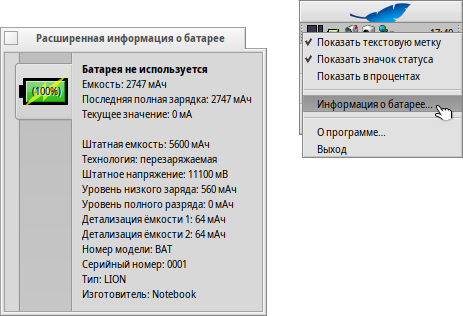

Русский
Русский Français
Français Deutsch
Deutsch Italiano
Italiano Español
Español Svenska
Svenska 日本語
日本語 Українська
Українська 中文 ［中文］
中文 ［中文］ Português
Português English
English Электропитание (PowerStatus)
Электропитание (PowerStatus)
| Расположение в Deskbar: | ||
| Расположение в Tracker: | /boot/system/apps/PowerStatus | |
| Настройки хранятся по адресу: | ~/config/settings/PowerStatus settings |
Апплет Электропитание (PowerStatus) отображает информацию об уровне заряда батареи, поэтому будет полезен для использования на мобильных компьютерах. Если апплет ещё не запущен, то при его запуске вам будет предложено запустить его в окне, либо установить в Deskbar. В оконном режиме вы сможете изменить размер иконки изменив размер окна, а т.к. данный апплет является репликантом, то вы сможете поместить его на рабочий стол.
Правый щелчок мыши вызовет контекстное меню.
Помните: Для корректной работы PowerStatus требуется поддержка ACPI.
Контекстное меню предлагает следующие опции:
| Отображает состояние батареи в процентах или оставшееся время работы. | ||
| Отображает состояние заряда батареи в виде иконки. | ||
| Переключение между отображением состояния заряда батареи в процентах и временном интервале (Опция должна быть включена). | ||
| Вызывает окно, которое содержит подробную информацию о батарее. | ||
| Вызывает окно "О приложении". | ||
| Закрыть апплет Электропитание (PowerStatus). |
Если опция включена, то уровень заряда батареи во время зарядки отображается в скобках .